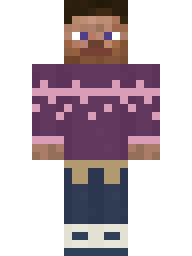

Editor de skins
Esse visual
é muito você.
Edite cada detalhe, experimente em 3D e leve sua criação para o Minecraft.
Abrir o editor
Força Aliada. Feita para jogar junto.
Crie servidores com o Manager, encontre onde jogar e reúna os amigos no Community. Uma conta conecta tudo.
Entre grátis na plataforma.
Manager incluído nas assinaturas.


O ponto de encontro está pronto. Quem vem?
Força Aliada Manager
Da criação ao backup, cuide do servidor em um só aplicativo. No PC ou pelo console no navegador.
Conhecer o ManagerPara Windows · Incluído no Pro e no TeamComece do zero ou traga um mundo que você já construiu.
Escolha quando fazer o backup. O Manager cuida da rotina enquanto o computador está ligado.
Seu servidor roda no seu computador, que precisa ficar ligado e conectado.
Força Aliada Minecraft
Encontre um servidor que combine com você. Guarde os favoritos e volte para a próxima partida.
Seus favoritos, histórico e amigos acompanham sua conta.
Editor de skins
Edite cada detalhe, experimente em 3D e leve sua criação para o Minecraft.
Abrir o editor
Assinatura Força Aliada
Comece grátis para jogar, criar e conversar. Assine para ter o Manager e mais recursos para sua comunidade.
Para seu servidor e uma equipe pequena.
Mais mundos. Mais gente criando junto.
O servidor roda no seu computador, que precisa estar ligado e conectado. Valores e condições confirmados na contratação.
É uma plataforma com ferramentas para criar servidores e conectar comunidades. Hoje, você encontra o Manager, o catálogo Minecraft com servidores e skins, e o Community. O servidor próprio é parte dessa história — a Força Aliada vai além dele.
Não. Você pode explorar o catálogo, usar skins e ferramentas, criar uma página básica de servidor e participar do Community sem assinatura. Pro e Team incluem o Manager e benefícios adicionais. Cada servidor pode ter suas próprias regras de entrada.
Não. O Manager roda no seu PC Windows, que precisa ficar ligado e conectado à internet. Ele reúne a administração, oferece um endereço público protegido e permite acesso ao console pelo navegador. O desempenho depende do computador, da conexão e da configuração do servidor.
Sim. A conta Força Aliada acompanha você no Manager, no Community e no catálogo. A conta Microsoft pode ser conectada para recursos do Minecraft, como importar e aplicar sua skin Java. Ela não é substituída pela conta Força Aliada.
Os dois incluem o aplicativo, o console e os benefícios pessoais. Pro permite até 2 servidores e 3 pessoas na equipe; Team, até 5 servidores e 10 pessoas. Confira a comparação e as condições dos planos.